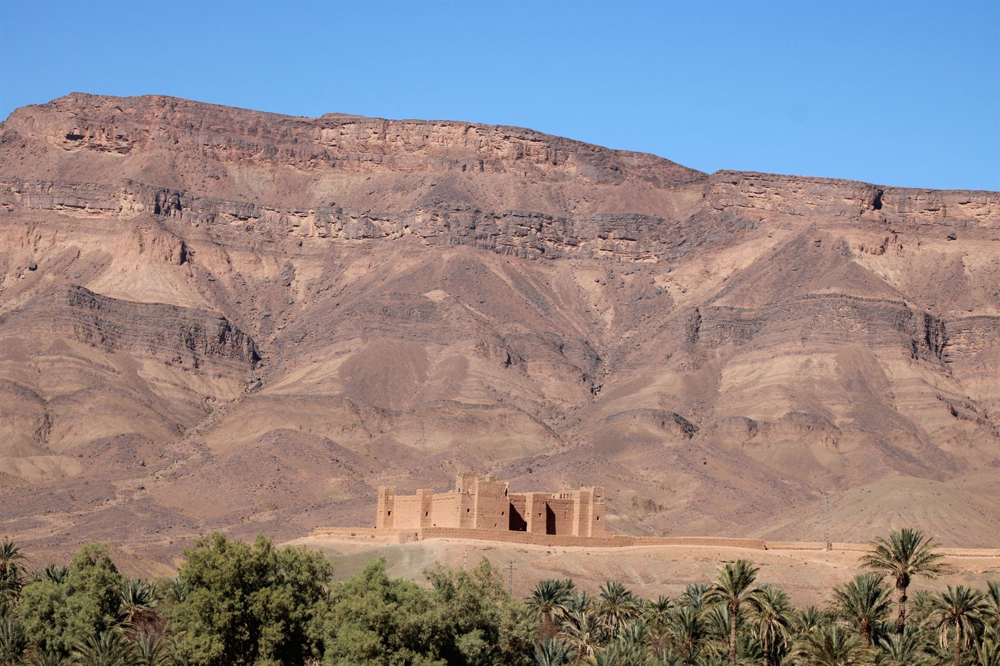

J111 novembre · Paris → Ouarzazate → Tidri
Départ pour le désert
Nous traversons les montagnes de l'Anti-Atlas avant de descendre vers la vallée du Draa, avec ses ksars — magnifiques villages fortifiés — et la ville de Zagora. Direction ensuite le village de Zaouiat Sidi Salah, où nous retrouvons notre équipe de chameliers. Une heure de marche nous mène à notre campement, au pied de la grande dune de Tidri. Nuit sous les tentes.
Vol Transavia TO3110 · Paris → Ouarzazate